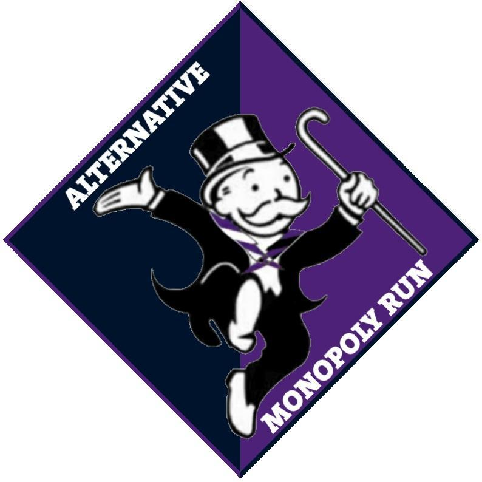

<!--The content below is only a placeholder and can be replaced.-->
<div style="text-align:center">
  <h1>
    Welcome to the Alternative Monopoly run tracker!
  </h1>
  

  <h2>Select a team...</h2>
  <select (change)="selectTeam($event.target.value)">
    <option selected="true" disabled>Choose a team here</option>
    <option *ngFor="let team of teams" [value]="team.teamID">
      {{team.teamName}}
    </option>
  </select>
  <br>
  <button (click)="startTracker()" *ngIf="selectedTeam !== null && !locationTrackingEnabled">Start tracking!</button>
  <button (click)="stopTracker()" *ngIf="locationTrackingEnabled">Stop tracking!</button>
  <br>

  <div *ngIf="locationTrackingEnabled">
    Date: {{date}} <br />
    Longitude: {{long}} <br />
    Latitude: {{lat}}
  </div>
</div>
<router-outlet></router-outlet>
